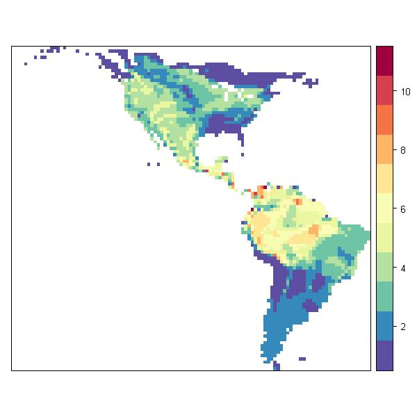

Species richness of the New World Wrens
USING DEFAULTS

|
This script runs with R version 2.14.0 (2011-10-31) & rangeMapper 0.1-1 |

|
The functions gridSize.save() and rangeMap.save(), and implicitly canvas.save() , are called with their default arguments. plot() uses the default colour scheme and scale class interval. global.bbox.save() uses the extent of all the ranges to compute a global bounding box. |
require(rangeMapper) dbcon = rangeMap.start(file = "wrens.sqlite",dir = tempdir() , overwrite = TRUE) # Breeding range vector files loc = system.file(package = "rangeMapper", "extdata", "wrens", "vector_combined")
# Mapping using default parameters
global.bbox.save(con = dbcon, bbox = loc) gridSize.save(dbcon) canvas.save(dbcon) r = readOGR(loc, "wrens", verbose = FALSE) processRanges(spdf = r, con = dbcon, ID = "sci_name") # creates "species_richness" map rangeMap.save(dbcon)
# Fetch and plot species richness map sr = rangeMap.fetch(dbcon) plot(sr)

Website built with R version 2.14.0 (2011-10-31) and the package “ascii” version 2.1 |